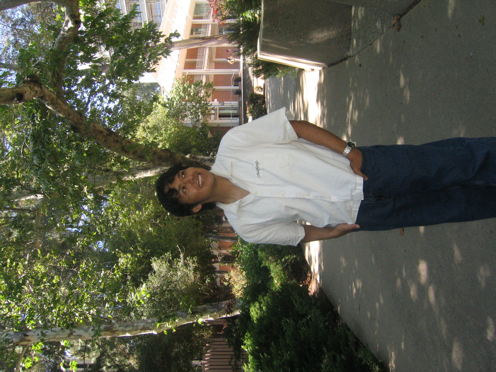

I am a fourth-year undergraduate student in the Department of Linguistics at UCLA. I am currently pursuing a B.A. in Linguistics and Psychology, and after graduating in Spring 2026, I plan to apply to Ph.D. programs in Linguistics.
My interests are broadly in psycholinguistics, with connections to formal semantics, particularly degree semantics, and the syntax-semantics interface. I am especially interested in how comprehenders resolve ambiguity in real-time, including which linguistic cues they use, and how they retrieve linguistic representations during processing. I am also interested in bilingualism and heritage languages as domains where these questions can be explored. More broadly, I hope to connect experimental work with current theoretical frameworks in linguistics.
My honors thesis, under the supervision of Jack Duff, explores the processing of implicit and overt pronouns in Spanish. In this project, we investigate whether native Spanish speakers show a robust division of labor between null and overt pronouns in cataphoric constructions.
Research Interests: Psycholinguistics, formal semantics, degree semantics, bilingualism, linguistic fieldwork